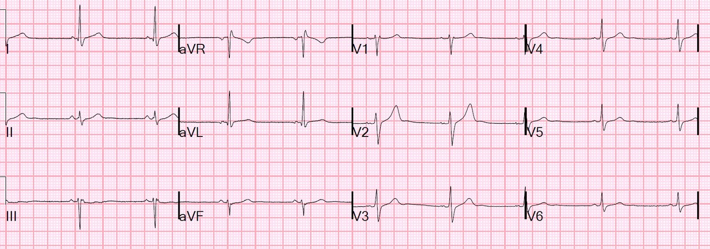
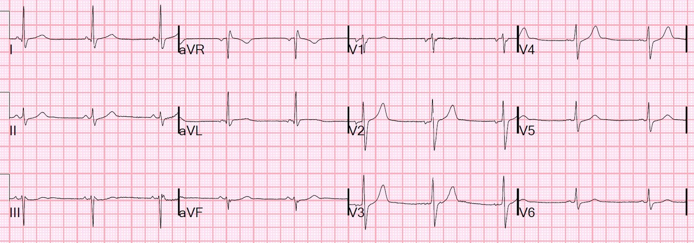
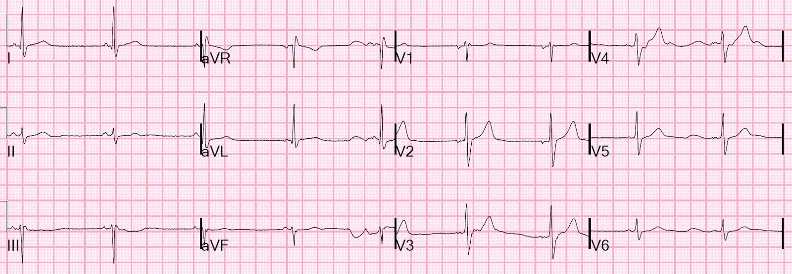
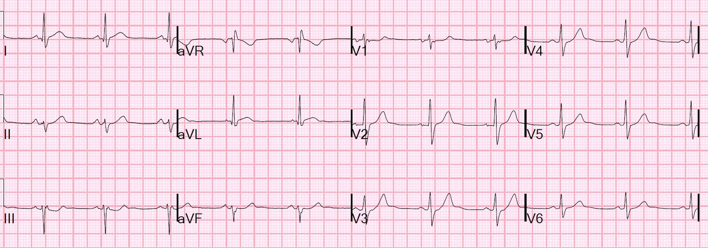
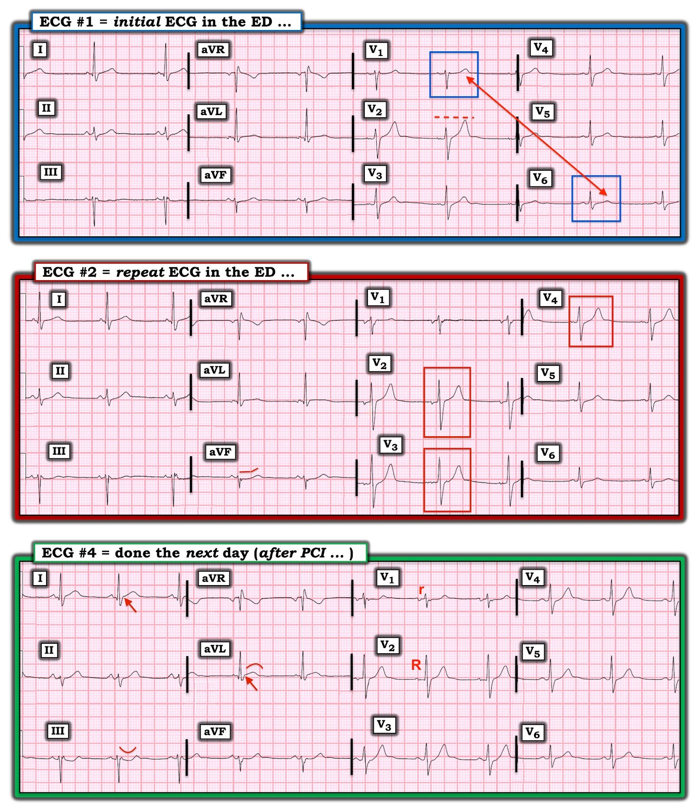

01/06/2022 — Tại sao chúng ta KHÔNG đặt tên nhồi máu cơ tim do tắc (OMI) theo một dấu hiệu điện tâm đồ? (Trái ngược với STEMI, được đặt tên theo ST chênh lên)
Bản dịch tiếng Việt của bài "Why do we NOT name Occlusion MI (OMI) after an EKG finding? (In contrast to STEMI, which is named after ST Elevation)" – Dr. Smith’s ECG Blog. Giữ nguyên toàn bộ 5 hình ảnh của bản gốc.
Một bệnh nhân nam 40 mấy tuổi, không có tiền sử bệnh tim, đến viện vì đau ngực.
- Đây là điện tâm đồ của anh ấy:


Không có bằng chứng rõ ràng của OMI hay thiếu máu cục bộ. Có một chút ST chênh lên (STE) rất nhỏ ở aVL, nhưng KHÔNG nằm trong bối cảnh sóng R rất nhỏ. Có một chút ST chênh xuống (STD) rất nhỏ ở chuyển đạo III, kèm sóng T dẹt không đặc hiệu.
- LƯU Ý: Tôi rất vui vì Ken Grauer (bên dưới) nêu ra vấn đề liệu hiện diện của “sóng T ở V1 cao hơn sóng T ở V6” có phải là bằng chứng của OMI hay không. Tôi đã chứng minh một cách thuyết phục rằng đây là dấu hiệu thường gặp trên điện tâm đồ bình thường, dù nó gặp nhiều hơn trong tắc LAD so với trong ST chênh lên biến thể bình thường. Hơn nữa, nghiên cứu có vẻ xác nhận ý tưởng này quả thật liên quan đến động mạch mũ, nhưng họ không nghiên cứu tình trạng tắc; thay vào đó, họ nghiên cứu bệnh mạch vành không triệu chứng. Các nghiên cứu trên điện tâm đồ bình thường cho thấy sóng T ở V1 cao hơn sóng T ở V6 vẫn nằm trong giới hạn bình thường.
= = =
Cơn đau vẫn tiếp diễn.
- Kết quả troponin I độ nhạy cao đầu tiên là 105 ng/L.
- Một điện tâm đồ khác được ghi:


Đoạn ST ở aVF đã dẹt hơn một chút, cho thấy có một ít ST chênh xuống bên cạnh các dấu hiệu không đặc hiệu ở III và aVL. Điều này gợi ý thay đổi soi gương (reciprocal) ở thành dưới.
- Tại thời điểm này, với cơn đau kéo dài, có chỉ định kích hoạt phòng thông tim (cath lab). Đau ngực cấp kéo dài (kháng trị), kèm troponin tăng đáng kể — là do OMI cho đến khi chứng minh được điều ngược lại, ngay cả khi không có dấu hiệu trên điện tâm đồ!
= = =
Nhưng phòng thông tim đã không được kích hoạt.
- Họ chờ troponin lần hai sau 2 giờ, kết quả (lúc 3 giờ sau khi bệnh nhân đến viện) là 258 ng/L.
- Phòng thông tim được kích hoạt.
- Họ ghi điện tâm đồ thứ ba trước can thiệp:


Không có khác biệt đáng kể …
= = =
Chụp mạch vành:
- Thủ phạm gây nhồi máu cơ tim không ST chênh lên (NSTEMI) của bệnh nhân là tắc do huyết khối đoạn giữa động mạch mũ
= = =
Siêu âm tim chính thức:
- Kích thước buồng thất trái bình thường, bề dày thành bình thường và chức năng tâm thu thất trái bình thường.
- Phân suất tống máu thất trái ước tính là 56 %.
- Rối loạn vận động thành khu trú vùng trước bên, giảm động đến vô động.
- Rối loạn vận động thành khu trú vùng dưới bên, giảm động đến vô động.
- Rối loạn vận động thành khu trú vùng trước từ đáy đến giữa, giảm động.
= = =
Điện tâm đồ ngày hôm sau, sau PCI:


Chỉ ĐẾN BÂY GIỜ mới có vẻ xuất hiện một số bằng chứng của OMI, nhưng động mạch đã được mở thông. Có “ST chênh xuống ở thành dưới”, vốn gần như luôn là hình soi gương của ST chênh lên ở thành bên cao, dù nhìn thấy hay không nhìn thấy. Ở đây, nó được thấy ở I và aVL.
= = =
Những điểm cần học:
- Nhồi máu cơ tim do tắc (OMI) có thể hiện diện mà KHÔNG có bất kỳ dấu hiệu điện tâm đồ đặc hiệu nào.
- Bệnh học nền tảng của OMI là tình trạng tắc. Vì vậy — tình trạng này nên được đặt tên theo bệnh học của nó, chứ không theo một khía cạnh (STE) của một xét nghiệm (điện tâm đồ) thường được dùng để chẩn đoán nó nhưng lại rất thiếu sót trong việc này.
- Bệnh nhân đang đau ngực kèm troponin tăng mà không giải thích được bằng nguyên nhân khác nên được đưa vào phòng thông tim. Đây là điều được khuyến cáo trong cả hướng dẫn của ACC/AHA lẫn hướng dẫn của châu Âu.
= = =
==================================
BÌNH LUẬN CỦA TÔI, bởi KEN GRAUER, MD (1/6/2022 — Cập nhật cho WordPress ngày 16/9/2026):
Tôi thấy việc đánh giá tuần tự các bản ghi liên tiếp trong ca hôm nay tuy tinh tế — nhưng lại rất bổ ích. “Câu trả lời lâm sàng đúng” đã được Dr. Smith nhấn mạnh ở trên — “Đau ngực cấp kéo dài, kháng trị, đi kèm troponin tăng đáng kể thì nên được coi là OMI cho đến khi chứng minh được điều ngược lại.” Bất kể điện tâm đồ có cho thấy dấu hiệu cấp tính ở một bệnh nhân như vậy hay không — kích hoạt phòng thông tim kịp thời rõ ràng là có chỉ định.
- Đáng tiếc — việc kích hoạt phòng thông tim đã bị trì hoãn trọn 3 giờ trong ca hôm nay.
Cho rõ ràng — tôi trình bày lại 3 trong 4 bản ghi của ca hôm nay trong Hình 1. Dù không thiết yếu để đưa ra “quyết định lâm sàng đúng” (vốn lẽ ra là thông tim kịp thời, sớm hơn nhiều so với thực tế) — tôi cho rằng các điện tâm đồ liên tiếp đã bộc lộ những manh mối quan trọng về biến cố đang diễn ra.
= = =
Hình 1: Tôi đã đánh nhãn các bản ghi thứ 1, thứ 2 và thứ 4 trong ca hôm nay.


= = =
Điện tâm đồ ban đầu trong ca hôm nay:
Điện tâm đồ ban đầu trong ca hôm nay cho thấy nhịp chậm xoang với tần số hơi dưới 60 lần/phút — các khoảng bình thường — trục hơi lệch trái (khoảng -15 độ) — và không có lớn buồng tim. Về Thay đổi Q–R–S–T:
- Có các sóng Q vách nhỏ (không có ý nghĩa) ở các chuyển đạo bên cao I và aVL.
- Tăng tiến sóng R bình thường — với vùng chuyển tiếp (nơi sóng R trở nên cao hơn độ sâu của sóng S) xuất hiện bình thường trong khoảng từ chuyển đạo V2 đến V4.
- Có đoạn ST-sóng T dẹt tinh tế và không đặc hiệu ở một số chuyển đạo chi (tức là ở các chuyển đạo III, aVL và aVF).
Các dấu hiệu chính trên điện tâm đồ #1 nằm ở các chuyển đạo ngực:
- Tôi cho rằng sóng T ở chuyển đạo V2 cao hơn và nhọn hơn mức lẽ ra phải có so với biên độ sóng R ở chuyển đạo này (tức là sóng T rõ ràng cao hơn sóng R ở V2).
- Sóng T ở tất cả các chuyển đạo ngực đều dương — và sóng T ở chuyển đạo V1 rõ ràng cao hơn sóng T ở chuyển đạo V6 (Hãy so sánh biên độ sóng T ở 2 chuyển đạo này trong các ô vuông MÀU XANH trên điện tâm đồ #1).
= = =
ĐIỂM THEN CHỐT (PEARL): Khi sóng T ở tất cả các chuyển đạo ngực đều dương (như trên điện tâm đồ #1) — sóng T ở chuyển đạo V1 thường không cao hơn sóng T ở chuyển đạo V6. “Mất cân đối sóng T trước tim” này không hay gặp — và trong bối cảnh lâm sàng “phù hợp”, nó có liên quan với OMI mới xảy ra do động mạch thủ phạm là LCx (Xem Manno và cs.: JACC 1:1213, 1983 — và bài ngày 17 tháng Bảy năm 2013 của Salim Rezaie trên ALiEM).
- Điểm MẤU CHỐT: Điều này không có nghĩa là sóng T cao, dương ở chuyển đạo V1 đôi khi không thể là kết quả của một biến thể tái cực hay hình soi gương (mirror-image) của “tăng gánh” thất trái, vốn đôi khi có thể thấy ở các chuyển đạo trước.
- Thay vào đó — điều này chỉ đơn giản muốn nói rằng đôi khi — tôi nhận thấy việc nhận ra một sóng T cao, dương ở chuyển đạo V1 rõ ràng cao hơn sóng T ở chuyển đạo V6 là một manh mối dẫn tới hội chứng vành cấp mà có lẽ nếu không tôi đã không nhận ra (Để xem thêm 2 ví dụ về dấu hiệu này — Xem Bình luận của tôi ở cuối trang trong bài ngày 23 tháng Mười năm 2020 — và trong bài ngày 26 tháng Ba năm 2022 trên Blog của Dr. Smith).
- Xin nhấn mạnh: Nếu là các dấu hiệu đơn lẻ — có lẽ tôi sẽ không để tâm nhiều đến sóng T ở chuyển đạo V2 trên điện tâm đồ #1 (vốn tự nó, ở một bệnh nhân ít triệu chứng hơn, có thể là biến thể bình thường) — cũng không để tâm nhiều đến một sóng T dương ở chuyển đạo V1.
- NHƯNG trong bối cảnh lâm sàng của bệnh nhân này, người đến khoa cấp cứu (ED) vì đau ngực dữ dội mới xuất hiện kèm theo: i) Sóng T ở chuyển đạo V2 trông có thể là sóng T tối cấp; — và, ii) “Mất cân đối” sóng T trước tim (T ở V1>V6); — và, iii) Sóng ST-T dẹt không đặc hiệu nhưng-dù-sao-vẫn-có-thật ở các chuyển đạo III, aVL, aVF — mức độ nghi ngờ của tôi về một biến cố cấp đang tiến triển đã tăng lên.
- Và, theo Dr. Smith — giá trị troponin ban đầu tăng đáng kể — đi kèm đau ngực dữ dội, mới xuất hiện, kháng trị lẽ ra đã đủ để thông tim kịp thời (ngay cả khi không có các dấu hiệu điện tâm đồ nêu trên).
= = =
So sánh điện tâm đồ #2 với điện tâm đồ #1:
Dù tinh tế — tôi thậm chí còn lo ngại hơn về một biến cố cấp đang tiến triển sau khi so sánh điện tâm đồ #2 với bản ghi ban đầu.
- Với mối lo ngại từ điện tâm đồ #1 rằng sóng T ở chuyển đạo V2 có thể là sóng T tối cấp — tôi cho rằng có sự gia tăng rõ rệt về độ nhọn và biên độ sóng T ở các chuyển đạo V3 và V4 trên điện tâm đồ #2 (trong các hình chữ nhật MÀU ĐỎ của bản ghi thứ 2 này).
- LƯU Ý: Những thay đổi này rất tinh tế. Thách thức khi đánh giá các bản ghi liên tiếp là phải xác định ý nghĩa (nếu có) khi thay đổi chỉ nhẹ — và khi những thay đổi đó có thể bị bù trừ bởi sự dịch chuyển trục mặt phẳng trán, vị trí đặt điện cực chuyển đạo ngực và/hoặc sự nặng lên của thay đổi sóng ST-T ở một số chuyển đạo nhưng cải thiện ở các chuyển đạo khác.
- Vì vậy, dù biên độ sóng T ở các chuyển đạo V1,V2 thấp hơn trên điện tâm đồ #2 — tôi cho rằng khả năng hiện diện của 3 chuyển đạo liên tiếp (V1,V2,V3) có sóng T tối cấp trên điện tâm đồ #2 đã thừa sức bù lại điều này — đặc biệt khi giờ đây có những gì trông rõ ràng là thay đổi ST soi gương ở chuyển đạo aVF.
- Ở bệnh nhân này với đau ngực mới xuất hiện kháng trị — tôi diễn giải việc so sánh điện tâm đồ #1 và #2 là gợi ý thay đổi sóng ST-T “động” (dynamic).
= = =
Điện tâm đồ cuối cùng:
Đáng ngạc nhiên là chỉ đến điện tâm đồ #4 (ghi sau khi PCI thành công) — mới thấy rõ ST chênh lên (các mũi tên MÀU ĐỎ chỉ ra ST chênh lên tại điểm J tinh tế-nhưng-có-thật ở các chuyển đạo bên cao I và aVL, vốn không có trên các bản ghi trước).
- Bằng chứng bổ sung cho thấy ST chênh lên này là có thật — đến từ hình ảnh đối xứng như soi gương dạng cong của ST chênh xuống (thay đổi soi gương) ở chuyển đạo III. Các thay đổi soi gương ở 2 chuyển đạo thành dưới còn lại (chuyển đạo II và aVF) cũng rõ ràng tăng lên so với điện tâm đồ #1.
- Một dấu hiệu cuối cùng phù hợp với nhồi máu thành sau — là sự gia tăng biên độ sóng R tương đối (so-với-sóng-S) ở các chuyển đạo V1 và V2 mà giờ đây ta thấy trên điện tâm đồ #4. Để so sánh — sóng S chiếm ưu thế ở cả hai chuyển đạo V1 và V2 trên điện tâm đồ #1.
= = =
Phỏng đoán của tôi:
Thông tim ở bệnh nhân hôm nay cho thấy tắc do huyết khối đoạn giữa động mạch LCx (động mạch mũ trái – Left Circumflex).
- Tôi nghi ngờ lý do khiến các thay đổi điện tâm đồ liên tiếp không hoàn toàn tương ứng như có thể dự đoán với các biến cố đang tiến triển (tức là ST chênh lên chỉ thấy trên điện tâm đồ #4 — vào lúc động mạch “thủ phạm” đã mở thông) — là vì nhồi máu sau-bên này có thể đã có diễn tiến “ngắt quãng” (stuttering) (với việc động mạch thủ phạm tự mở thông và tắc lại hơn một lần — cho đến khi PCI cuối cùng ổn định được quá trình này).
= = =
= = =